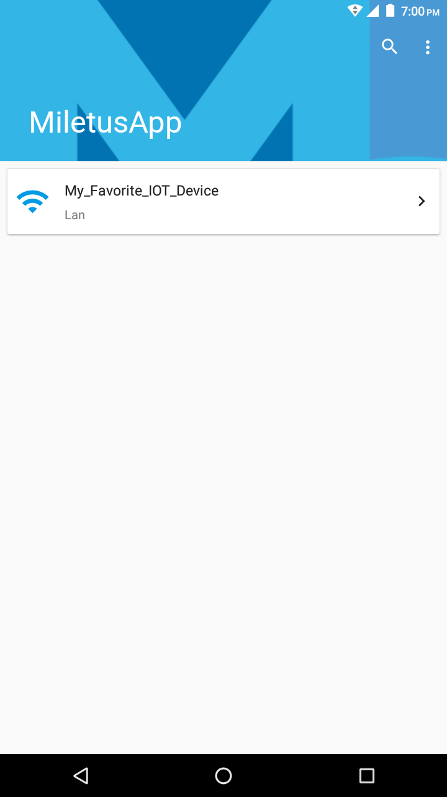
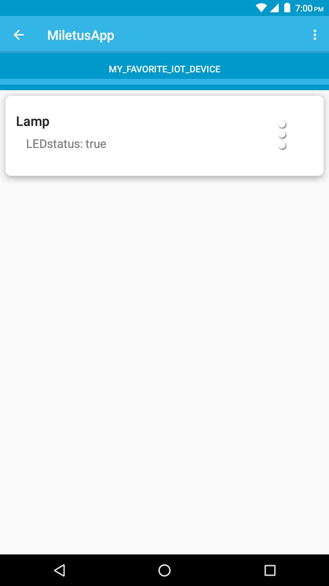
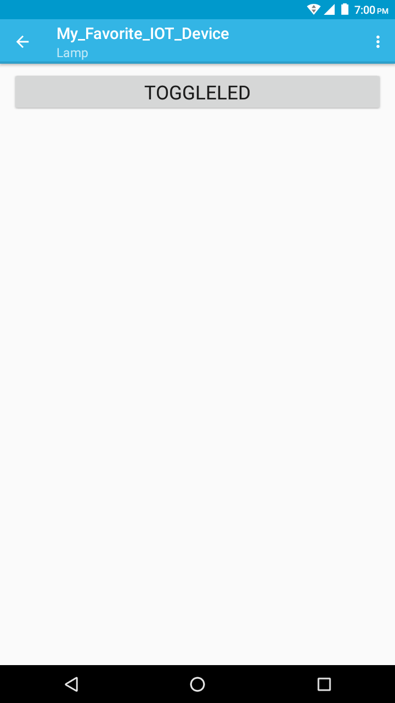

LibMiletus is compatible with multiple combinations of hardware and software platforms (See more on the supported platforms page). The following process shows how to setup the library to work with NodeMCU and the Arduino IDE.
The process includes the following steps:
The first step is to download and install the Arduino IDE. Please refer to Arduino official website for more information on how to download and install the Arduino IDE.
In order to work with the NodeMCU board, you must install the ESP8266 Arduino core extensions to the Arduino IDE. Acourding our experiments, maybe you should try to install the git version. To install it through the Arduino IDE, you can follow the instructions on the link above or:
At this point, it may be a good idea to test whether your NodeMCU board is working with your Arduino IDE. To do so, you may run the Blink example from the examples. The following steps should run the blink example:
NodeMCU contains a LED that can be controlled by the user's program. Once you finish uploading the code, this LED must start blinking.
Once you have installed the IDE, you have to install the following list of dependecies:
| Library | Author | Recomended Version |
|---|---|---|
| PubSubClient library | Nick O'Leary | 2.6.0 |
| DHT sensor library | Adafruit | 1.3.0 |
| Adafruit Unified Sensor | Adafruit | 1.0.2 |
| Arduino JSON | Benoite Blanchon | 5.11.1 |
| NTPClient | Fabrice Weinberg | 3.1.0 |
| ESP8266 Software Serial* | Peter Lerup | Github |
The next step is to install the LibMiletus library. You may perform this task using the Arduino IDE. To do so, you must:
In the Arduino IDE, open the Example in the menu “File -> Examples -> libMiletus -> Some_Example”
Change the SSID, Password, and, optionally, the name of the device.
Select the appropriate board and upload the program.
Then you have a functional device.
Open the example in the menu “File -> Examples -> libMiletus -> NodeMCU-LED” and the Serial Monitor “Tools -> Serial Monitor” Make sure that data rate for serial data transmission is set to 115200 baud.
Change the following lines:
#define WIFI_SSID "MY_WIFI_SSID"
#define WIFI_PASSWORD "MY_WIFI_PASSWORD"with the name and password of an available wi-fi network and save the file to a custom location.
The blue LED next to the micro USB port should light up and the Serial Monitor should show:
Connecting...
---
Connected to <SSID>
IP address: <IP Address>Run the following command on the terminal, changing the ```IP Address``` for the IP and the port of your board, by default, the port is 1969:
$ curl -H "Content-Type: application/json" -X POST -d '{"name":"lamp.toggleLED","component":"lamp","parameters":{}}' <IP Address>:<Port>/commands/executeMake sure that your device and your computer are on the same network.
The LED should toggle.
This command toggles the LED, so running it again will turn it back on.
You can use the MiletusApp in your Android smartphone to control your smart devices.
Download the least App release at the download page.
Based on your traits, a control interface will be dynamically generated in the App.
Make sure that your device and your Android phone are on the same network.
  
During some cases in our tests, we face some problems related to the section text fitting in a specific region. We bypass this problem installing the git version instead of the standard installation.
The ESP8266 extensions for the Arduino IDE include a compiler, an assembler and a linker that enables the Arduino IDE to generate code for the ESP8266 chip. To this date, the linker script, which maps the program sections (code, data, ...) into the hardware address space happens to map constants at the iram.text sections to the RAM memory, instead of the Flash. Unfortunately, this may cause the system to run out of memory when the program contains large constants, which may be the case when using many String objects.
section .text' will not fit in regioniram1_0_seg'
This problem has been reported by some of our users in some versions of the Arduino IDE. In this section, we provide instructions so that you can modify your linker script to map these constants into the Flash memory, instead of RAM.
Before you start, we would like to point out that these changes might not be necessary depending on your Arduino IDE. In this sense, we recommend that you first try to flash the demonstrative example (distributed with LibMiletus) into the NodeMCU without trying to fix the linking script. If the IDE does not complain about program size, this fix may not be necessary.
In order to fix the linking script, your must first locate the linker script file: “eagle.app.v6.common.ld”
~/Arduino/hardware/esp8266/tools/sdk/ld/esp8266com/esp8266/tools/sdk/ld/
~/Library/Arduino15/packages/esp8266/hardware/esp8266/*/tools/sdk/ld/
On Windows it is usually
at C:\Users\USER\AppData\Roaming\Arduino15\packages\esp8266\hardware\esp8266\2.0.0\tools\sdk\ld\
find / | grep "eagle.app.v6.common.ld"
Once you have located the file, edit it by moving the “*.c.o(.iram.text)” entry to line 160, as indicated bellow:
153 .irom0.text : ALIGN(4)
154 {
155 _irom0_text_start = ABSOLUTE(.);
156 *(.ver_number)
157 *.c.o( EXCLUDE_FILE (umm_malloc.c.o) .literal*, \
158 EXCLUDE_FILE (umm_malloc.c.o) .text*)
159 *.cpp.o(.literal*, .text*)
160 *.c.o(.iram.text)
161 *libc.a:(.literal .text .literal.* .text.*)
162 *libm.a:(.literal .text .literal.* .text.*)
After you finish editing your script file, run the NodeMCU tests again to make sure everything is still working.
If the above error (ttyUSB0 can be replaced by the name of your serial port) shows up when you try to upload a program to your Arduino board, run the command:
$ sudo chmod a+rw /dev/ttyUSB0